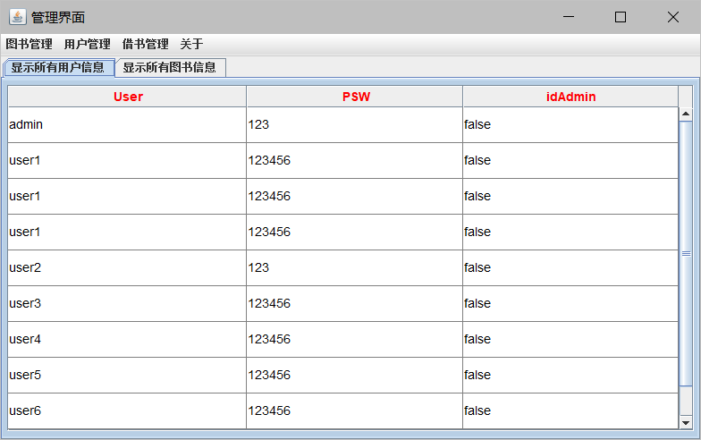

关于 javaSwing 数据绑定及刷新 链接到标题
简介 链接到标题
最近学校期末了，正在进行 java 实训，实训要做一个图书管理系统。对于实现 mysql 数据库数据在 JTable 上的绑定，以及数据更新后界面的刷新时，遇到了问题。由于我对于 JavaSwing 完全不了解 ，实训时也是现学现卖，所以不清楚如何将数据绑定到 JTable 上。看了很多 CSDN 的博客，最后采用了以下方法。
关于数据绑定的实现 链接到标题
首先创建针对数据的模型类,以下的模型类是基于自定义 Book 表的简单示范
/*book_list*/
public class book_list extends javax.swing.table.DefaultTableModel{
Class[] types = new Class[] { java.lang.Object.class, java.lang.String.class,
java.lang.String.class};
public book_list() {
super(new Object[][] {}, new String[] { "bookname", "booktype"});
}}
然后对数据表进行填充，创建 book 对象，读取数据库中的数据后进行对象的赋值。利用循环将所有数据存入 List 中，而后利用循环从 List 中依次取得对象，并将各属性存入 boo_list 创建的对象中。然后创建 JTable 实体用 model 进行填充。这样可以将数据库的信息转换成可以填充 JTable 的对象。从而完成数据绑定的操作。
//图书表的创建
public static book_list model2 = new book_list();
public static JTable table2 = new JTable(model2);
ArrayList<Book> list = new ArrayList<Book>();
try {
sqlBookcod sql = new sqlBookcod();
ResultSet rs = sql.searchBook();
while (rs.next()) {
Book book = new Book();
book.setName(rs.getString("bookname"));
book.setBookType(rs.getString("booktype"));
list.add(book);
}
}catch(SQLException e) {
e.printStackTrace();
}
for (int i = 0; i < list.size(); i++) {
Book b = (Book) list.get(i);
model2.addRow(new Object[] {b.getName(),b.getBookType()});
}}
数据更新 链接到标题
当时进行数据绑定后，直接将 table 添加到 panel 中，当数据更新后，table 中的数据已经被定死了。所以我采用了简单粗暴的方法，通过监听菜单栏的点击事件，直接删除 table 中的所有数据，然后重新进行填充，并删除 panel 中的 table 控件，重新添加 table，从而实现数据表的更新。
//图书表清空数据
public static void delmodel2() {
model2 = new book_list();
table2 = new JTable(model2);
}
public void stateChanged(ChangeEvent e) {
if(tabbedPane.getSelectedIndex() == 0) {
panel1.remove(p1); //删除panel1中原有的组件
tablepan.delmodel1(); //删除数据表内容
p1 = tablepan.createTextPanel1(); //重新填充数据表
panel1.add(p1);
panel1.repaint(); //对panel1本身进行重绘
}
}
界面如下 链接到标题
